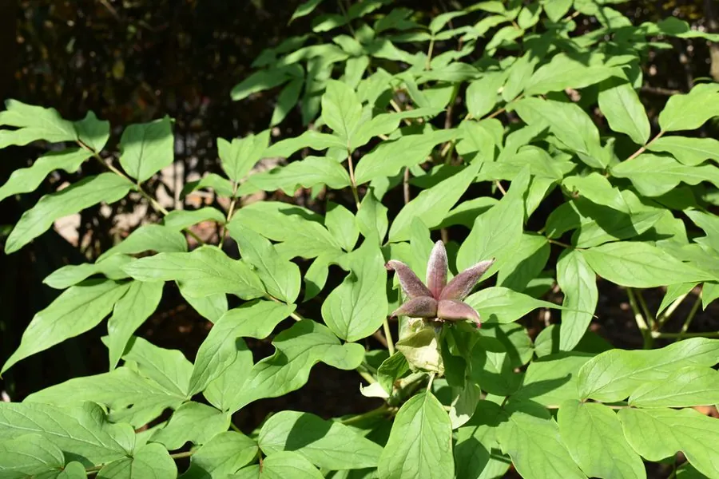

灌木与花木 · 植物界
牡丹 Paeonia suffruticosa

中国特有的传统名花，花大色艳、富丽堂皇，被称为“花中之王”，栽培历史逾一千五百年，洛阳、菏泽以牡丹闻名。
- 分类
- 门被子植物门纲木兰纲目虎耳草目科芍药科属芍药属
- 栖息环境
- 原产中国西北及秦岭山地灌丛，栽培于庭院与花圃，喜光耐寒
- 地理分布
- 原产中国西北部及秦岭、大巴山一带，河南洛阳、山东菏泽等地广泛栽培
- 保护级别
- 暂无评估；野生类型资源稀少，受到保护
物种志
牡丹为落叶灌木，高可达 2 m，茎直立，树皮灰褐色，分枝粗壮；叶片为二回三出复叶，顶生小叶宽卵形，常 3 裂，表面绿色、背面淡绿。花期 4–5 月，花单生于枝顶，花径可达 25 cm，有单瓣、重瓣之分，花色有红、粉、白、黄、紫、绿等，花形端庄、香气清雅；蓇葖果成熟时开裂，种子黑色。
牡丹原产中国西北部及秦岭、大巴山一带，野生类型生于海拔 1000–2000 m 的山地灌丛，栽培历史逾一千五百年，现以河南洛阳、山东菏泽最为著名。牡丹喜光、耐寒、怕积水，适宜深厚肥沃、排水良好的沙壤土；分株、嫁接与播种均可繁殖。根皮即中药“丹皮”，可清热凉血；牡丹文化底蕴深厚，被视为富贵吉祥的象征，唐代以来“唯有牡丹真国色”的诗句流传至今。
形态与习性
- 株高可达 2 m，分枝粗壮
- 花期4–5 月，花径可达 25 cm
- 果期8–9 月，蓇葖果开裂
- 光照喜光，稍耐半阴
- 水分耐旱，怕积水
- 土壤深厚肥沃、排水良好的沙壤土
- 繁殖分株、嫁接、播种
- 主要用途观赏、丹皮入药、牡丹籽油
趣味知识
- 牡丹是落叶灌木，与草本芍药同属芍药科，但牡丹有木质茎干。
- 牡丹根皮是中药“丹皮”，具有清热凉血的功效。
- 洛阳、菏泽是中国著名的牡丹产地，每年 4 月举办牡丹花会。
- “唯有牡丹真国色，花开时节动京城”是唐代诗人刘禹锡咏牡丹的名句。